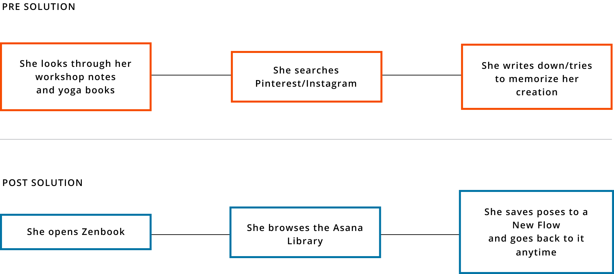

PROBLEM
Yoga is a highly popular exercise and lifestyle trend, and more and more yoga teachers are entering the job market everyday. The methods of teaching and building a personal yoga teaching business are still relegated to outdated websites and pen-and-paper planning techniques.
Challenge: Streamline the process of creating new yoga curriculums and business management so that yoga teachers can have more time to focus on innovation and creativity.
SOLUTION
Providing a business management solution and teaching assistant specific to the yoga teaching journey will provide yoga teachers with the edge to compete in an increasingly saturated job market.
RESEARCH + DISCOVERY
USER SURVEYS
Based on the survey data, my app should focus primarily on the online library of poses that caters to teachers teaching the Vinyasa Flow school of yoga, while still including some content for other styles like Yin or prenatal. Because the bulk of my users don’t currently use technology to create flows, there’s a space for my app to enter the market, and 80% of my users agree with that. Since 60% of my users don’t plan their classes until either right before or the day of, flow creation needs to happen quickly and intuitively. There needs to be room and space to adjust or modify flows to respond to client needs on the go.
53.8%
still use books and paper for inspiration
60%
wait until the day of to plan their classes
90%
sub classes for other teachers
83.6%
wanted to browse an online library of yoga poses for inspiration
USER PERSONAS
From this data, I created two user personas to bring focus to our target audiences. They allowed me to pinpoint specific frustrations and problems as well as tasks and goals for Zenbook to accomplish. They humanised our designs and kept my users at the forefront of each solution we built. Eve represents our younger tech-savvy demographic who uses Instagram and social media to build her business and stay current on yoga trends. She is familiar with and unafraid of exploring new apps and adopts new tech with relative ease. Bethany represents the old guard of yoga teachers who still refer to their handwritten workshop notes and their years of experience to teach and maintain their business. She doesn’t really trust technology and maybe hasn’t even considered the potential it has to help her grow her business.
Eve
- Modern, Savvy, Adventurous
- Age:24
- Occupation: Yoga Teacher (3 yrs)
Goals:
- Create and share classes using a vast archive of available poses
- Keep track of teaching schedule and save flows to calendar
- Keep track of student feedback and other student data for individual classes
Pain Points:
- No centralized knowledge base for poses
- Difficult to sub classes due to different class types and structures
- No easy way to keep track of class information like students and metrics
Motivations:
Eve has been practicing Vinyasa yoga for 5 years and teaching for the past 2 years. She’s seen the success of yoga teachers on Instagram and in her community and she has the mindset to build her business and branding to another level, but she needs help managing it as a business and not a side hustle.

Beth
- Veteran Guru
- Age:56
- Occupation: Yoga Teacher (13 years)
Goals:
- Manage busy teaching schedule across private clients, studios, and other clients
- Connect with other teachers and inspire others with creations
- Share and find substitutes for classes within network
Pain Points:
- Emails get lost between teachers and students
- Books and notes are hard to organize and search through quickly
- Sign up sheets and roll call sheets get lost or unorganized
Motivations:
Beth’s interested in how to modernize and connect to her younger, savvier students and clients, but she’s unfamiliar with the tech. She saves her notes in email drafts on her gmail account and passes around a sign-up sheet for her email newsletter at her classes. She’s been practicing for so long that she feels she doesn’t need help with making up flows for classes, but she would like to keep in touch with the newest yoga trends, if only to point out how dangerous and unsafe they are.
COMPETITIVE ANALYSIS
Using the competitor apps that our survey takers named in our user surveys, I conducted a competitive analysis to define Zenbook’s niche in the market. I compared SequenceWiz, PTMinder, and Pocket Yoga Teacher.
- Building an audience. Increasingly, yoga is a social media phenomenon that is growing and changing everyday on apps like Snapchat and Instagram. Zenbook could bring in featured flows from outside influencers and teachers to give the app more street cred and authority in the community.
- Liability issues and health disclaimers. Both SequenceWiz and Pocket Yoga Teacher circumvent these issues by either preventing users from sharing flows or using disclaimers and warnings against unsafe practice. Since sharing flows will be a feature of the app, Zenbook should create featured Flows and other content to serve as examples for teachers to promote safe practice.
SequenceWiz

PTMinder
Pocket Yoga Teacher
INFORMATION ARCHITECTURE
USER TASKS AND FLOWS
In my user stories, I iterated quickly by creating epics first, then getting granular with more detailed user stories for all the features my app would need. Thinking in terms of epics and broad user journeys helped me to be more empathetic with my users and helped me get into the correct mindset. I was no longer writing out a list of features to design, but carving out the tools I needed as a potential user for the app itself.
High Priority Tasks
Low Priority Tasks
As a user, I want to...
- Browse the Asana Library for inspiration
- Search for a specific pose in the asana library using keywords
- create a flow for a particular class
- Sign into my account
- Create a new account
As a user, I want to...
- View my teaching schedule and sort by day or week
- Set a topic or intention for a Flow
- See an updated timer with each pose I add
- Direct message users on my contact list
- See Integration with MindBody and other fitness apps
USER JOURNEYS
Creating user journeys was pivotal to turning my user research data into an impactful visualization of my user’s needs and goals. I was able to pinpoint specific problems my users had that could be solved through my app, and I began to see the hierarchy of user tasks emerge. Here, Eve walks us through the task of creating a flow using her normal routine. For each event on the journey, I measured her emotional state and thought process. We are then able to find specific points in her journey where app features could solve her biggest problems and provide the greatest benefit. Post-solution user journeys became the user epics that I would break down into more detailed user stories.
TASK: Eve Creates a Flow

WIREFRAMES
These wireframes went from fast and loose to more organized and refined as we started making firmer decisions on the user interface design. Some of the most challenging aspects were deciding how to visualize the app from user flows to wireframes. In my first attempts at doing wireframes, I always felt paralyzed by putting my pen to paper and having to commit to designs. So I solved this by getting a whiteboard and using that to quickly visualize how I wanted to design each screen and each element. The solidness and slickness of the marker just seemed to take the pressure off me when iterating, and I was able to arrive at solutions faster and without fear.
WIREFRAME SKETCH 1
WIREFRAME SKETCH 2
WIREFRAME SKETCH 3
WIREFRAME ASANA LIBRARY 1
WIREFRAME ASANA LIBRARY 2
WIREFRAME ASANA LIBRARY
LO-FI PROTOTYPING
Once the basic structure of the app was finalized, it was time to rig a mockup to be able to test our hypotheses on real people. In the mockup stage, we developed our wireframes digitally with Sketch and used InVision to create clickable prototypes. It was here that we began to face some real challenges. As our mockups came to life, we had to revisit some of our user flows and reorganize steps and tasks to streamline our design. Where something might have made sense in the wireframe alone, once it had to be interacted with, the flow didn’t make sense or it was missing transitional pages in between. As our mockups came to life, we had to revisit some of our user flows and reorganize steps and tasks to streamline our design. After user testing, our hypotheses were either validated by our users or they were challenged and improved on.
WIREFRAME SKETCH
LO-FI PROTOTYPE
HI-FI PROTOTYPE
VISUAL DESIGN
BRANDING
Zenbook has some fairly complex functions as a business management tool and teaching assistant. Inputting client data and managing schedules can be anything but serene. I wanted Zenbook to inspire, motivate, and push my users in a way that was still in line with yoga’s principles of calm in the face of adversity. I felt that Montserrat is an elegant and energetic sans serif that works well for my brand. Choosing a color for the logo was the most challenging. I had a few different combinations but ultimately went with oranges and purple and gray. I wanted to convey energy and I wanted it to stand out from typical interpretations of ‘zen’ and ‘calm’. The color is energetic and joyful but it doesn’t feel too wild for the calm, “zen” name.
HI-FI PROTOTYPE
This was the hardest step. Creating the final look of our design was meticulous work, but finally validating our hypotheses about our visual design choices with actual users was even harder. Not only did we have to study how users used our app, but we had to defend our design choices time and time again as they were questioned and challenged in preference tests and usability tests. Each time, though, we arrived at better iterations that struck closer to the mark of what Zenbook needed to become. Our testers helped us target weak spots in our design like poor icon design or unclear information hierarchy.
USER FEEDBACK #1
Both my in-person testers and my Maze Prototype testers had lots of feedback to share about the New Class creation screens. Most of it had to do with making sure my CTA language matched the task I was asking them to do.
- Users got lost on the first screen because while the task asked them to “Add a New Class”, the CTA under Classes only prompted them to “View My Classes”, with no other option or icon to “Add” anything at all.
- To make this clearer, I added “Add New Class” as the button text when there were no other classes scheduled instead of “View My Classes”, and added a “+” icon to the top right corner of the box.
Button CTAs #1 vs #2 to maximize clarity
USER FEEDBACK #2
The second major hiccup testers encountered was during the New Flow user task. It also had to do with vague CTA language and/or unclear icon symbols.
- Users weren’t sure where to go after selecting a few poses to add to their New Flow. There was a “+” icon, but since this meant “create new” on other pages in the app, users were unsure if this was the correct button to tap in this instance.
- I saved the intial look of the “+” icon, but after users select a pose, the “+” will expand into a text button that reads “Add Pose” to be as clear as possible.
Button Designs #1 vs #2 for added clarity and simplicity
CONCLUSION
CHALLENGES
ITERATING AND ITERATING
I touched on the paralyzing fear that overcame me when it came to iterating wireframes quickly. Learning how to push past this fear by using a whiteboard of all things (sometimes the best solution is the most simple) helped me to get all the bad ideas out and start the juices flowing for better ideas. There are no perfect solutions in design, just ones that get better and better with testing and more testing.
STAYING IMPARTIAL
The most challenging part was listening to the feedback! It’s tough to hear that my initial design might be flawed, so keeping an open mind was important and remembering that my design is only improved by listening to users was key. As both a designer on the project and a potential user, I had to learn to disregard my own powerful biases and design for a variety of user experiences for a single app.
WHAT WE ACHIEVED
I really upgraded my user research game on this project. I learned the value of user journeys: it allowed me to empathize with the user while building a holistic view of the problems they needed to solve. It got the ball rolling much faster and created a much stronger foundation for my user flows and user stories later on. Because my grip on my user research and information architecture was so much stronger in this project, I spent less time on my wireframes and mockups and Zenbook became a much more cohesive product as a result.